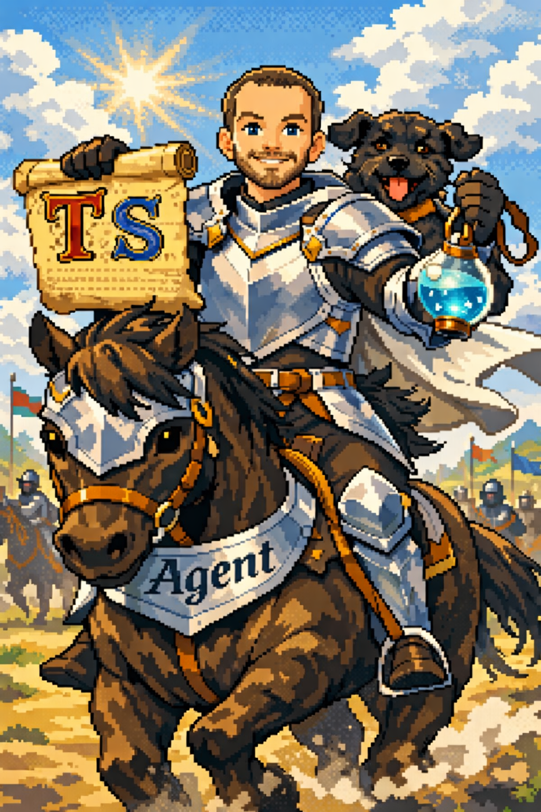

Calorie Counter
Count calories without the guilt.
A lightweight, offline-first PWA for tracking daily calorie intake. No gamification, no unwanted advice, no streak shaming — just fast, honest calorie counting with barcode scanning.
Go on quest →
The Amazing Adventures of
Count calories without the guilt.
A lightweight, offline-first PWA for tracking daily calorie intake. No gamification, no unwanted advice, no streak shaming — just fast, honest calorie counting with barcode scanning.
Go on quest →Look up words, learn languages.
A minimal dictionary PWA that searches Wiktionary and Bab.la. Pick a language, type a word, get the definition — no accounts, no flashcard upsells, no clutter.
Go on quest →A new quest awaits...
I'm nostalgic about the web, before it was taken over by companies.
You visited someone's homepage and it felt like walking into their room — weird
wallpaper, a guest book, maybe a MIDI file playing and a bat GIF pointlessly flying across the viewport.
Checking the "Links" collection to see where to next... It was exploration, it was treasure hunting.
It wasn't hyper-optimised for engagement. It wasn't tracking across websites. No one sent you an email to visit again.
It was honest.
I try to build things with that kind of simplicity in mind. Mostly for myself. Apps that do one thing, do it fast, and get out of your way. No accounts unless truly needed. No tracking. No dark patterns. No streaks to guilt you into coming back. If the app is useful, you'll come back on your own.
This is not about making things free (as in beer). This is not about being anti-establishment.
As a user, it's about satisficing.
As a provider, it's about resisting the idea of constant growth.